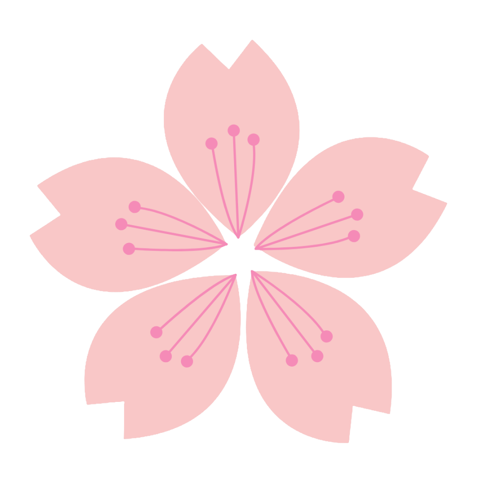

採用情報
recruit
たいせつにしていること
motto

 子ども主体の保育
変化に富んだ現代において、子どもたち一人ひとりの“個性”と“未来を切り拓く力”を育むため、子ども主体の豊かな保育を実践しています。
子どもは一人ひとりが可能性にあふれた有能な学び手。
保育者はさまざまなアイデアを出し合い、子どもたちのやりたいこと、興味があることを最大限に引き出します。
単に知識を教えるのではなく、自ら取り組む楽しさから学びへの意欲を呼び起こす、非認知能力に主眼を置いた取り組みを進めています。

自由な風土
保育者が思い思いの先進的な保育を実践できる、自由度の高さが桜のこもれびの特長。古い慣習にとらわれることなく誰もが意見を発信できる、風通しの良い園づくりを行っています。
園を創るのは保育者一人ひとりの個性。
楽しく仲間と助け合いながらアイデアを実現できる風土を大事にしています。
一方で、本部部門には専門家との共創や優れた保育の実践例を体系化する仕組みがあり、本部と連携することでさらに豊かな保育を実践することができます。

ワークライフバランス
大事にしているのは「安心して働き続けていける会社」であること。
桜のこもれびでは、働き方の多様化や学びの支援など、
ワークライフバランスを大切にした環境づくりに努めています。
働く人を大事にすることが、質の高い保育につながると考えています。
募集要項
requirements
桜のこもれびキッズランドの各園のいずれか
※ご希望の勤務地やお住まいの住所から近い園を優先的にご案内します。
7:00～18:30のシフト制（延長時間あり）
9h拘束、実働8時間
出勤する時間と曜日で基本給が変わります
資格をお持ちの方。
※資格取得見込みの方はご相談ください。
月給 20万～25万（各種手当含む）
時給制 1120円～1450円 （勤務時間・勤務曜日は相談可）
勤務シフトは常勤・非常勤併せて100パターン以上あります。あなたの希望に合う勤務時間を選んで働けます。
年2回※月給制の方に限ります。
期末賞与：対象年度の業績に応じて支給
土日祝日
または
月間10日を選べます。
厚生年金・健康保険・雇用保険・労災保険 完備
延長保育手当・皆勤手当・担当手当など
年一回（業績評価による）
年末年始・産前産後休暇・育児休暇・看護休暇制度あり
交通費全額支給。予防接種補助など福利厚生充実。
よくある質問
FAQ
スタッフの資格や経験について教えてください
当園のスタッフは、保育士や幼稚園教諭など、保育に関する専門的な資格を持つ人材です。また、多彩な経験を持ち、子どもたちとの信頼関係を築きながら、安心して成長できる環境を提供しています。定期的な研修やワークショップを通じて、スキルや知識の向上に努めています。